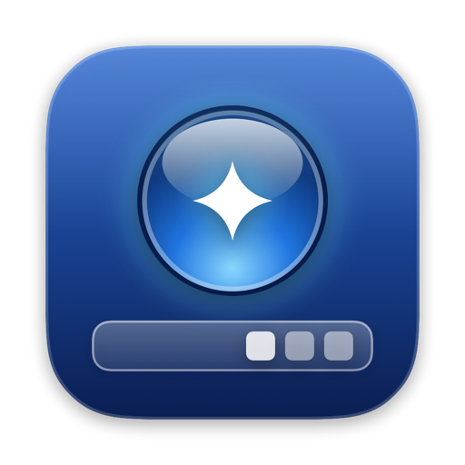
Superbar
The taskbar your Mac never had.
A Start menu that searches as you type, one button per app with window previews, snapping, a tray, and a clock. Along the bottom of every display.
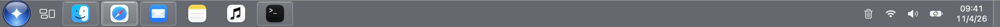
Start menu
Start, searched.
Click the orb or press ⌃⎋ and start typing. Pinned and recent apps on the left, your folders and the power buttons on the right.
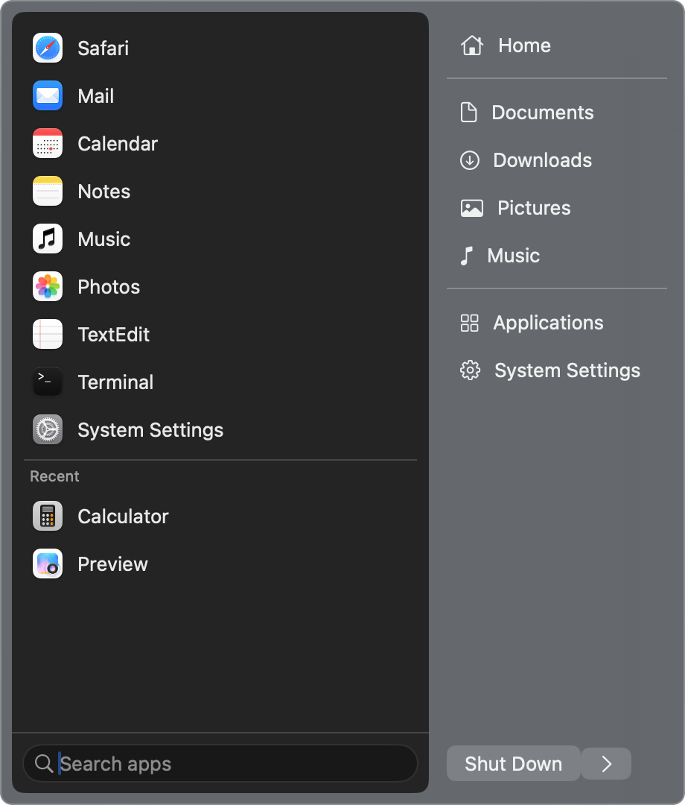
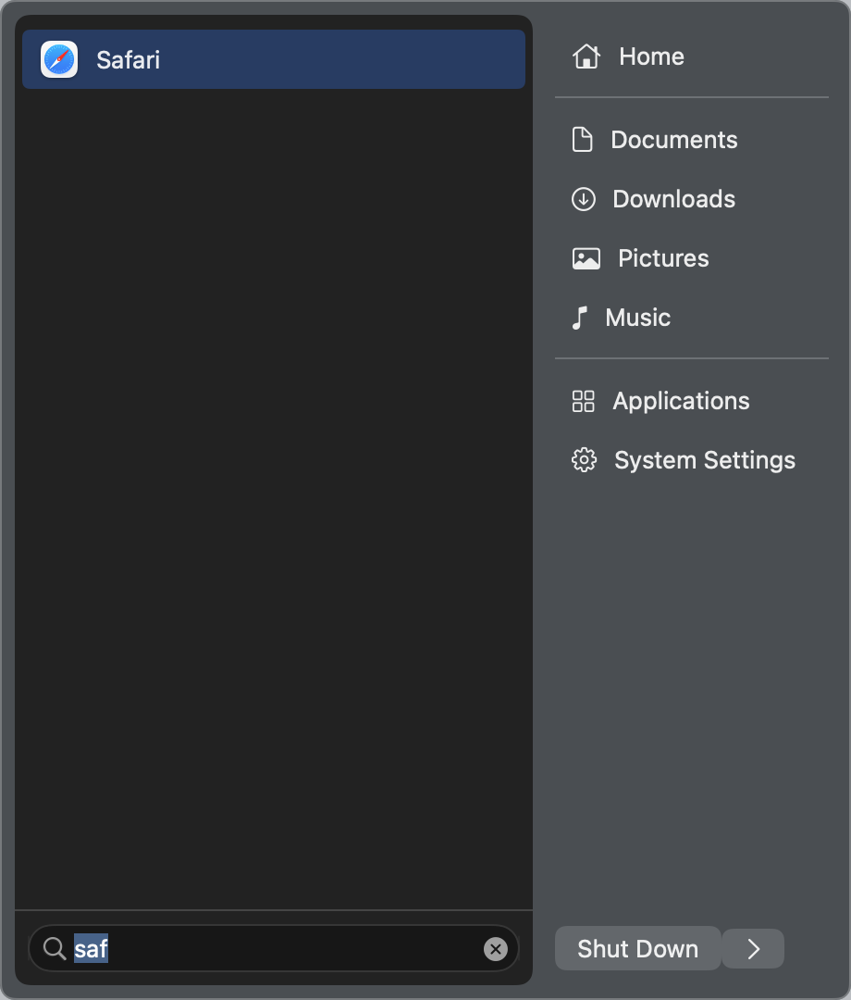
- Best match first. Names that start with what you typed, then word starts (“time” finds FaceTime), then anything that contains it.
- Return opens the top hit. Esc or a click outside closes Start.
- Your shortcut. Change it in Settings.
App buttons
One click does the right thing.
Superbar decides what a click means from the app’s state the moment you press. Each app gets one button, and its glow takes the color of its icon.
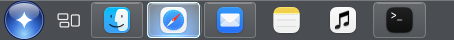
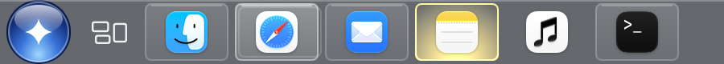
| Not running | Opens it |
| Running behind other apps | Brings its window forward |
| In front, one window | Minimizes it |
| In front, two or more windows | Lists them so you pick one |
| Only minimized windows | Restores the latest |
| Hidden with ⌘H | Unhides it |
- Shift-click or middle-click opens a new window.
- Right-click lists the app’s windows, plus Snap Window, Pin, Close, and Quit.
- Drag a button to reorder your pins.
Buttons
Only the apps you’re using.
Pinned apps always keep their button. Every other app gets one only while it has a window open, minimized, or in full screen on another Space. Close its last window and the button goes.
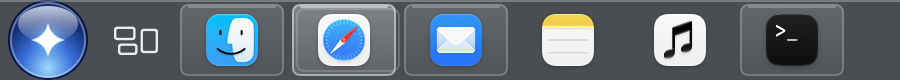
Previews
See every window before you pick.
Rest the pointer on a button and its windows appear, minimized ones marked. Click one to jump to it, or close it right there.

Visibility
Show it. Hide it. Your call.
Keep the bar up, let it auto-hide, or keep it hidden until you open Start. In every mode it slides away over full-screen apps and comes back from the bottom edge.
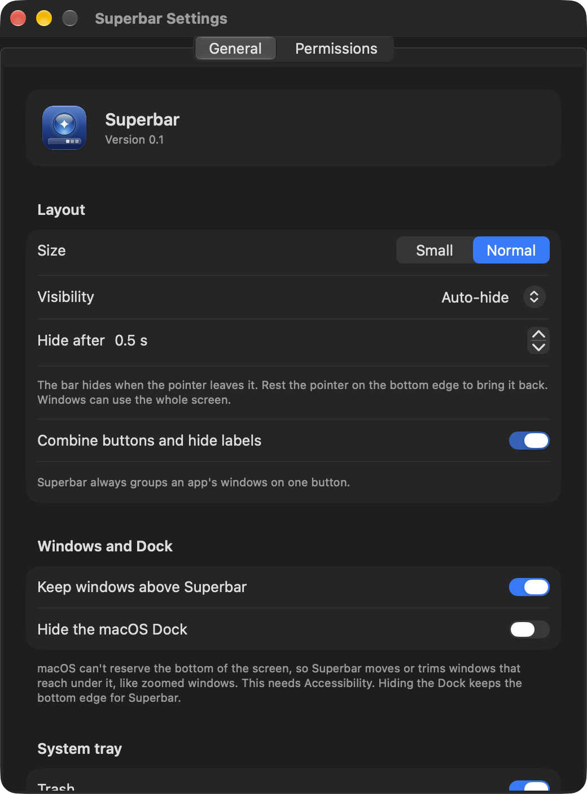
- Always show keeps it up and keeps windows clear of it.
- Auto-hide comes back when you rest the pointer on the bottom edge, and waits the delay you set, 0 to 10 seconds, before it goes.
- Always hide stays out of sight until you open Start with ⌃⎋.
Window snapping
Snap windows into place.
Fill the screen with the front window, or snap it to a half, a quarter, or a third. Snapped windows stop at the top of the bar. The same choices are under Snap Window when you right-click a button.
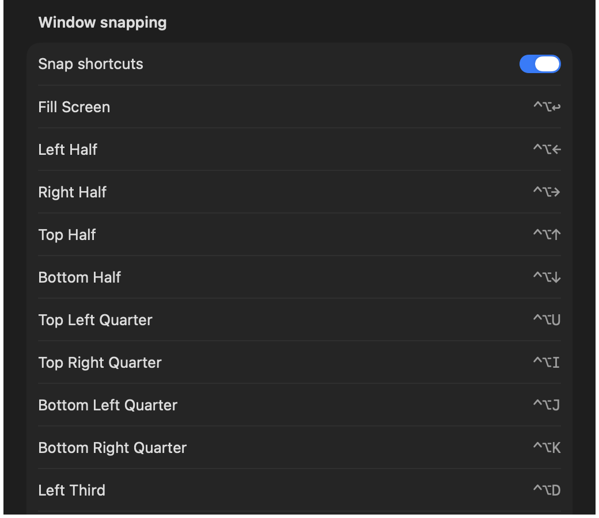
| Snap to | Shortcut |
|---|---|
| Fill the screen | ⌃⌥↩ |
| Left, right, top, or bottom half | ⌃⌥←→↑↓ |
| Quarters, laid out like the screen | ⌃⌥UIJK |
| Left, center, or right third | ⌃⌥DFG |
Turn the shortcuts off in Settings if another app uses them. Superbar marks any it couldn’t claim.
Windows and Dock
Nothing hides behind the bar.
macOS can’t reserve the bottom of the screen, so Superbar keeps windows clear of the bar: a window that reaches under it moves up, or has its bottom trimmed. Hide the Dock and Superbar keeps it at the bottom with small icons, so minimized windows shrink toward the bar.
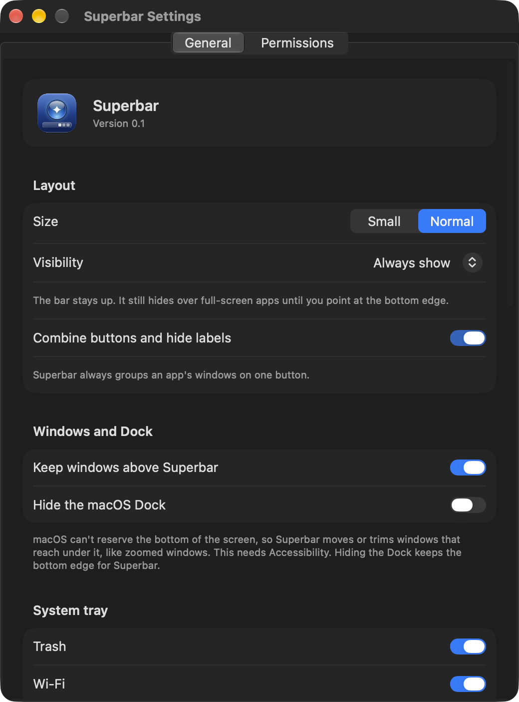
Tray
A tray that works.
Turn Wi-Fi on or off, set the volume or mute, and check the battery and time left, each from a small popover. Hide any of them in Settings.
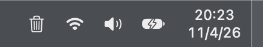
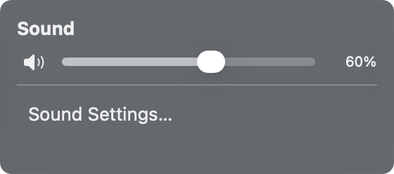

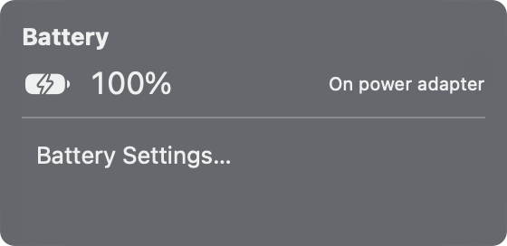
Clock
Any date, one click away.
Click the clock for a month calendar. Type or step to any date, click a day, and press Today to come back. The clock follows your Mac’s 12 or 24 hour setting.
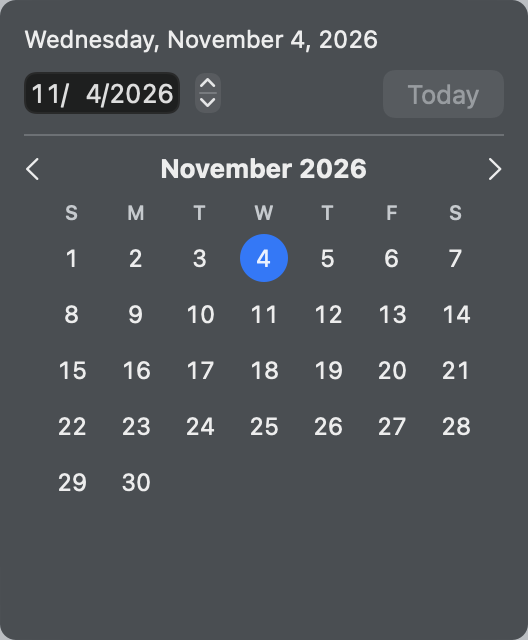
And there’s more.
A bar on every display
Plug in a monitor and it gets its own bar, with the same apps and window counts. Start and the calendar open on the display you’re using.
Trash, without the Dock
A trash icon beside the tray opens Finder’s Trash, with Empty and Put Back.
Mission Control and desktop
A button after the orb opens Mission Control. The strip at the far right shows the desktop; click again to bring your windows back.
Privacy
Asks for only what it uses.
Superbar asks for each permission on its own and keeps working without it. Settings shows each one as On or Off, with a button to grant it.
Accessibility
Lists each app’s windows, and focuses, minimizes, closes, moves, and snaps them. Without it, buttons still switch apps.
Screen Recording
Draws window thumbnails in previews and fills in some titles. Without it, previews show the app icon.
Automation
Asks System Events to restart, shut down, or log out, so apps offer to save your work, and Finder to open its Trash.
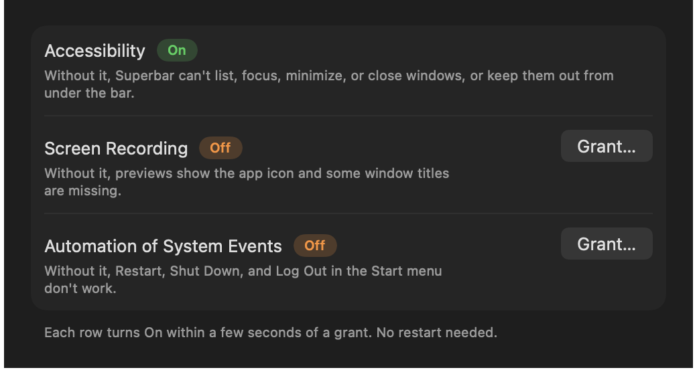
Install
Build it in a minute.
You need a Mac on macOS 26 and Apple’s command line tools (Xcode works too). Clone the repository, then from its folder:
-
Install Apple’s command line tools, if you don’t have them.
xcode-select --install -
Build Superbar, install it to
~/Applications, and open it../build.sh --open Grant Accessibility when Superbar asks. Each row in Settings turns On within a few seconds.
Optional: turn on Hide the macOS Dock in Settings. Restore Dock puts it back.